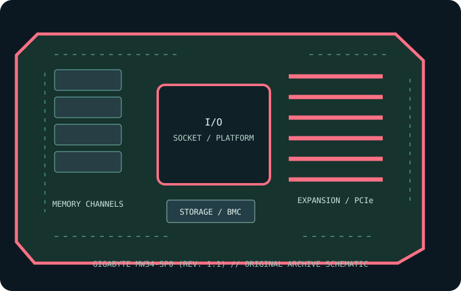

[ INDIVIDUAL COMPONENT // MOTHERBOARDS ]
GIGABYTE MW34-SP0 (rev. 1.1)
ATX Intel W680 workstation board for supported LGA1700 desktop/Core and Xeon E-2400 class processors. This record identifies the stated model/revision; confirm the PCB label and use the matching vendor support files.

REVISION WARNING: Similar model names, board revisions and firmware may differ in CPU support, lane routing or connectors. Identify the silkscreen and assembly code before installation or firmware updates.
Specifications
| Catalog subcategory | Workstation and server boards |
|---|---|
| Exact model / era | GIGABYTE MW34-SP0 (rev. 1.1) — ATX Intel W680 workstation board for supported LGA1700 desktop/Core and Xeon E-2400 class processors. (2023) |
| CPU and socket / SoC | One LGA1700 Intel processor listed by GIGABYTE for MW34-SP0 revision 1.1; Core-generation and Xeon E-2400 support vary by BIOS/CPU support list. |
| Chipset / platform | Intel W680 chipset. |
| Memory and ECC | Four DDR4 UDIMM slots, dual-channel; ECC and non-ECC UDIMMs are supported as allowed by CPU/platform; capacity and rate depend on processor and validated DIMMs. |
| PCIe and form factor | ATX; two PCIe 5.0 x16 physical slots (x16 or x8/x8 lane mode) and one PCIe 3.0 x4 slot per GIGABYTE specifications. |
| Storage | Four M.2 PCIe 4.0 x4 sockets and eight SATA 6 Gb/s connectors; confirm lane sharing and boot/RAID options in the revision-specific manual. |
| BMC and networking | No onboard AST2600/IPMI BMC is specified for this board; system monitoring is host-based. Intel 2.5GbE LAN is provided. |
Compatibility and revision notes
Use only LGA1700 CPU models supported by the exact rev. 1.1 CPU list and BIOS. ECC behavior requires a compatible Xeon/platform configuration and supported ECC UDIMMs; registered memory is not supported. Verify DDR4-only modules, M.2 lane sharing, ATX chassis and CPU graphics requirements.
Socket type, connector shape, chipset branding and CPU family alone do not establish compatibility. Confirm the exact CPU support list, minimum BIOS, ECC/DIMM type and population, shared PCIe/storage lanes, power inputs and dimensions in the linked model-specific vendor documentation.
Preservation and repair
Record the board revision, serial label, BIOS and BMC versions, MAC addresses, attached risers/cables and test conditions before servicing. Use the vendor's socket procedure, ESD-safe handling and correct chassis airflow; do not cross-flash firmware from a related SKU.
Photograph PCB labels, connector condition and accessories before cleaning. Keep BMC access credentials in secure inventory, and never power the board with loose conductive hardware beneath it.
Sources & further reading
- GIGABYTE MW34-SP0 (rev. 1.1) — manufacturer specifications and product referencePrimary product reference for platform, board configuration and feature summary.
- GIGABYTE MW34-SP0 (rev. 1.1) — manufacturer support, manual and firmware resourcesUse the exact revision-specific manual, CPU support list and firmware package before service.
Manufacturer model-specific documentation takes precedence. Confirm details for the exact printed board revision.